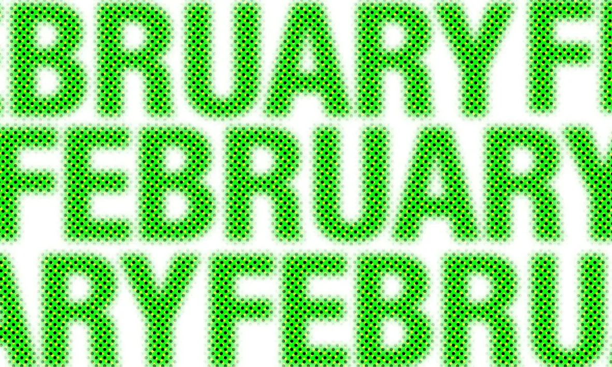
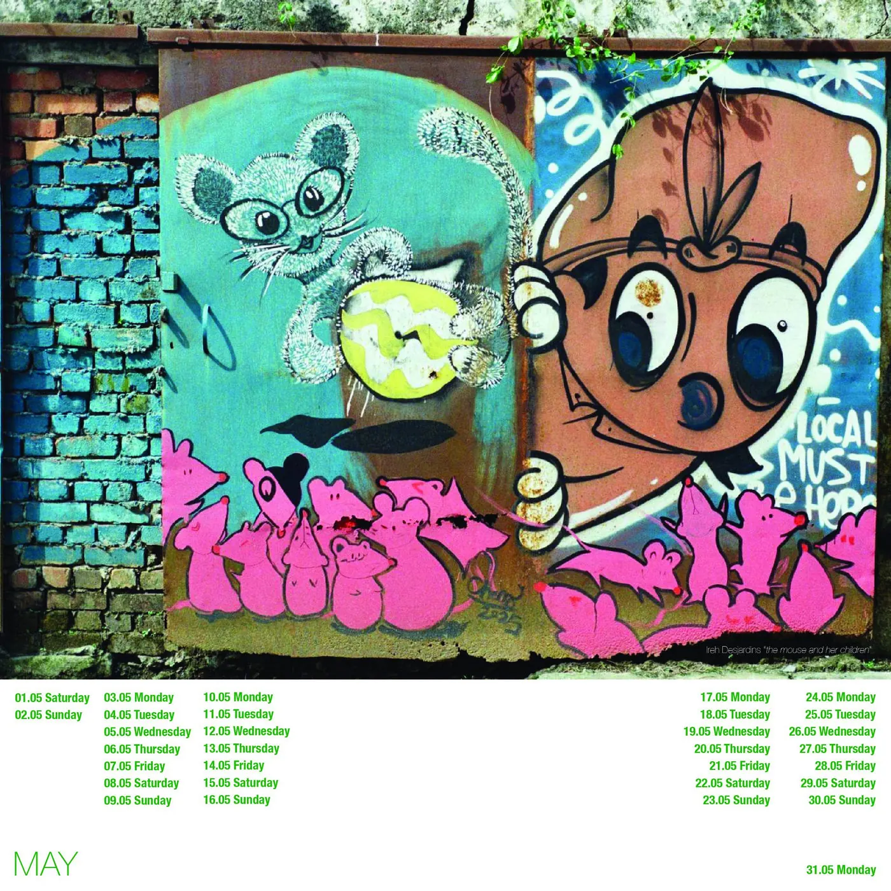

01
System
One set of rules for type, numerals and image across all twelve months.

05
A year in street photographs
Push it, drag it, click it for the next month.
Overview
A calendar made from a year of street photographs, with the days set into each picture.
BriefBuild a twelve-month calendar as one visual system: the same rules for type, numerals and image across every month.
ApproachEach month starts from a street photograph. The days are set into the picture itself, and the packaging continues the system: four arched flaps fold to the centre to spell Snippets 2027.
3 steps
One set of rules for type, numerals and image across all twelve months.

Each street photograph carries its own month, the days set into the image.
Four arched flaps fold to the centre to spell Snippets 2027.
